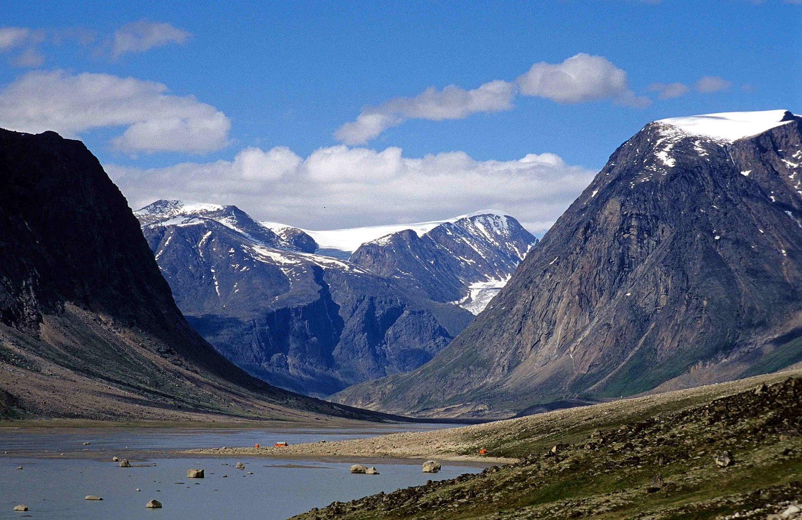

Arctic Cordillera
Fun facts about the Arctic Cordillera!
- It is the northern most mountain range on Earth.
- It spans dozens of islands in the Canadian Arctic, from the northeasternmost part of the Labrador Peninsula to the far north of Ellesmere Island. There are dozens of subranges over this stretch.
- Barbeau Peak, the tallest mountain in the range, is also the tallest mountain in Eastern North America.
- Three-quarters of the land is bare rock.
- Polar bears, arctic wolves, muskoxen, caribou, and arctic hares are some of the few species who can exist in the harsh climate of the Arctic Cordillera. There are artifacts dating back to 2700 BCE showing that indigenous people hunted these animals on islands throughout the Arctic Cordillera.
Arctic Cordillera, New World Encyclopedia
,
Barbeau Peak, The Royal Canadian Geographical Society
